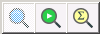
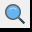
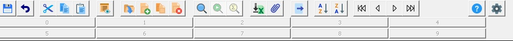

Double numérotation Rinaldi Structal
|
GENI
AGENCE - Double numérotation Rinaldi Structal |
La numérotation des commandes évolue à la demande du bureau d'étude qui souhaite un numéro de commande plus "intelligent".
La numérotation des commandes actuelle reste et sera complétée par un nouveau numéro
4 champs seront à renseigner : typologie / produit / numéro / indice le trigramme chantier viendra automatiquement de la fiche structure du chantier.

Par défaut, vous arrivez dans l'écran en mode de recherche.

Comme si vous aviez déjà cliquer sur
(F2)Vous pouvez compléter n'importe quel champ de l'entête pour interroger la base de données puis cliquer sur (Shift+F2) pour afficher les résultats.
Pour ajouter un nouvel enregistrement, vous devez cliquer sur (Shift+F2) pour afficher les résultats, puis cliquer sur Ajouter / Créer pour commencer votre saisie.
